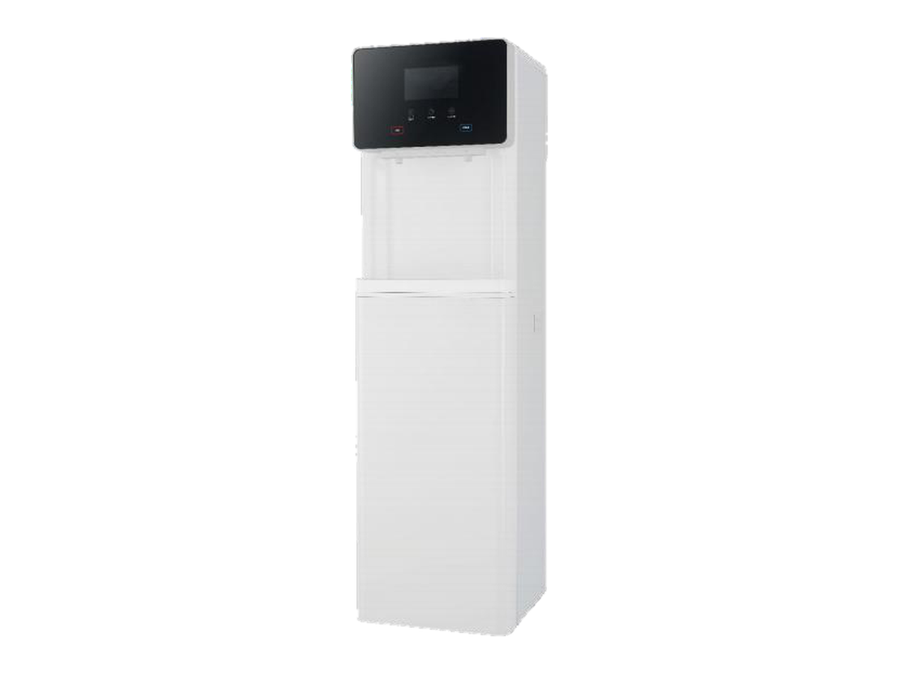

Настольные
НастольныеRP-C09
RO-очиститель с льдом, горячей и холодной водой
SKU: RP-C09
MOQ: уточняйте при запросе
Главная/Продукция/Коммерческие системы/ RP-C23

Коммерческие системы
Напольный коммерческий диспенсер воды (A1)
RP-C23 — Напольный коммерческий диспенсер воды. Ключевая спецификация: RO 100G, горячая, холодная вода и лёд для 50–100 человек. Спецификации подтверждаются для каждой модели и заказа. Ещё три напольных варианта на этой странице: два варианта с баком чистой воды 8 л и вариант IoT — см. «Варианты» ниже.
Напряжение / частота настраиваются под страну назначения. Другие конфигурации подтверждаются для каждого заказа.
RP-C23 — напольный коммерческий диспенсер воды для офисов и общественных мест. Основная модель работает при 100 GPD с баком воды 10 л и подаёт горячую, холодную воду и лёд для 50–100 человек, с номинальным объёмом очищенной воды 4000 л. Использует 5-ступенчатую фильтрацию (PP + C1 + RO + C2) с УФ-стерилизацией, а LED-сенсорный экран показывает TDS и срок службы фильтра, с блокировкой от детей. Четыре напольных варианта на этой странице: основная модель, два варианта с баком чистой воды 8 л и вариант IoT 4G.
Каков минимальный объём заказа?
Первый заказ — 200 единиц на модель, повторные заказы — 500 единиц.
Можно ли заказать образец до оптового заказа?
Да. Образцы готовы через 15 дней, стоимость образца возвращается при первом оптовом заказе. Оптовые заказы занимают 40 дней после утверждения образца и отгружаются FOB Шэньчжэнь.
Какой вариант выбрать?
Укажите RP-C23 и уточните вариант: основная модель (100 GPD, бак 10 л), вариант с баком 8 л в белой или розово-золотой отделке, либо вариант IoT (200–400 GPD, IoT 4G).
Четыре напольных варианта — укажите RP-C23 и уточните вариант (основная модель, вариант с баком 8 л в белой или розово-золотой отделке, либо вариант IoT).
Наведите курсор на изображение варианта, чтобы увидеть его спецификации. На сенсорных экранах коснитесь изображения.



Полные спецификации каждого варианта, рядом. Таблица спецификаций ниже показывает значения основной модели.
| Спецификация | RP-C23-1 — основная модель (A1) | RP-C23-2 — вариант с баком 8 л, белая отделка (AM608R) | RP-C23-3 — вариант с баком 8 л, розово-золотая отделка (AM629R) | RP-C23-4 — Вариант с IoT (S100) |
|---|---|---|---|---|
| Форм-фактор | Напольный (напольная установка) | Напольный (напольная установка) | Напольный (напольная установка) | Напольный (напольная установка) |
| Производительность RO | 100 GPD | Подтверждается по заказу | Подтверждается по заказу | 200–400 GPD |
| Бак чистой воды | 10 L | 8 L | 8 L | 10 L |
| Бак горячей воды | 2 L (можно настроить до 5 L) | 1.8 / 5 / 10 L (опционально) | Подтверждается по заказу | 7 L (можно настроить до 10–12 L) |
| Номинальная мощность | 850 W (UF) / 900 W (RO горячая) / 950 W (RO лёд-горячая) | 850 W | 2150 W | 950 W (UF) / 1000 W (RO горячая) / 1050 W (RO лёд-горячая) |
| Номинальный общий объём очищенной воды | 4000 L | 3000 L | 4000 L | 5000–8000 L |
| Размеры (Д×Ш×В) | 310×425×1150mm | 380 × 395 × 1376 mm | 372 × 372 × 1380 mm | 400 × 480 × 1460 mm |
| Диапазон температур | Горячая вода ≥90°C; ледяная вода ≤15°C | Холодная 10–15°C, комнатной температуры, горячая 45–99°C | Холодная 10–15°C, комнатной температуры, горячая 45–99°C | Горячая вода >90°C; холодная вода в версиях с охлаждением |
| Охлаждение / лёд | 0.6 L электронный бак для льда (опция с компрессором 3 L) | Холодная вода 10–15°C | Электронный бак для льда 0.7 L | Термоэлектрический 0.8 L или компрессорный 2 L (в зависимости от конфигурации) |
| Подключение | Подтверждается по заказу | Подтверждается по заказу | Подтверждается по заказу | IoT 4G |
| Фильтрация | 5 ступеней; PP + C1 + RO + C2 | PP + уголь + RO + пост-уголь | PP + уголь + RO + пост-уголь | Фирменные картриджи, предоставленные заказчиком |
| Стерилизация | УФ-стерилизация | Статическое УФ в баке чистой воды | Статическое УФ в баке чистой воды | УФ с длительным сроком службы + двойное проточное УФ |
| Напряжение / частота | 220 В ~ 50 Гц; настраивается под страну назначения | 220 В / 50 Гц; настраивается под страну назначения | 220 В / 50 Гц; настраивается под страну назначения | 220 В; настраивается под страну назначения |
| Цвет | Подтверждается по заказу | Белый | Розовое золото | Белый |
19 строк спецификаций из каталога ROPureOEM.
| Форм-фактор | Напольный (напольная установка) |
|---|---|
| Размеры | 310×425×1150mm |
| Производительность RO | 100 GPD |
| Бак горячей воды | 2 L (можно настроить до 5 L) |
| Бак воды | 10 L |
| Бак ледяной воды | 0.6 L электронный (опция с компрессором 3 L) |
| Номинальная мощность | 850 W (UF) / 900 W (RO горячая) / 950 W (RO лёд-горячая) |
| Мощность нагрева | 800 W |
| Мощность охлаждения | 60 W |
| Выход горячей воды (≥90°C) | 15 / 20 / 30 L/h |
| Выход ледяной воды (≤15°C) | 0.6 L/h (электронный) / 3 L/h (компрессор) |
| Номинальный общий объём очищенной воды | 4000 L |
| Возврат очищенной воды | ≥55% |
| Фильтрация | 5 ступеней; PP + C1 + RO + C2 |
| Стерилизация | УФ-стерилизация |
| Подходит для | 50–100 человек |
| Дисплей и безопасность | Светодиодный сенсорный экран с индикацией TDS и контролем срока службы фильтра; блокировка от детей |
| Напряжение / частота | 220 В ~ 50 Гц; настраивается под страну назначения |
| Другие конфигурации | Подтверждается по заказу |
Спецификации взяты из каталога ROPureOEM. Если значение ещё не подтверждено, оно указано как «Подтверждается при заказе» — мы не публикуем неподтверждённые цифры.
НастольныеRO-очиститель с льдом, горячей и холодной водой
SKU: RP-C09
MOQ: уточняйте при запросе
 Настольные
НастольныеНастольный RO с компрессорным охлаждением
SKU: RP-C10
MOQ: уточняйте при запросе
 Настольные
НастольныеСерия газированной воды — два варианта
SKU: RP-C14
MOQ: уточняйте при запросе
 Настольные
НастольныеRO-очиститель с нагревательным кувшином
SKU: RP-C07
MOQ: уточняйте при запросе